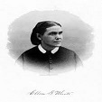

Site des livres d'Ellen White
Dans ce livre Ellen White traite de la maladie de l'âme et du baume guérisseur que l'on peut trouver pour toutes choses dans la confiance à Dieu. Écrit d'une manière simple et élégante, “ Ministry of Healing ” vous dirigera vers une vie pleine de joie et d'allégresse, une vie en contact avec la Source de pouvoir de guérison.
Parler de la famille, de la santé, du retour à la nature, des pauvres, du secours aux malades, du relèvement des êtres tombés, de la lutte contre l'intempérance et l'alcoolisme, de la confiance en Dieu, — c'est là tout un programme de régénération individuelle et sociale, physique, économique et morale
 Ellen White communiqua les grands principes de la santé mais elle laissa le soin aux médecins adventistes de faire des recherches scientifiques et de mettre en application la réforme sanitaire. Sur certains points, les adventistes s’inspirèrent des idées novatrices de médecins ou de réformateurs de la santé comme Edward Hitchcock, William Alcott, Ruben Mussey et bien d'autres
C'est ce que le docteur a prescrit ! Vous vous interrogez sur les nouvelles données de santé qui semblent inépuisables et souvent contradictoires en ce moment ce livre pratique de 24 conseils de santé concis et pratiques basés sur la recherche scientifique et la Bible qui vous aideront à vivre plus longtemps, plus heureux et plus sain. Vous voulez tenir la maladie d'Alzheimer à distance ? Prenez 100 microgrammes de supplément de vitamine B12 chaque jour, surtout si vous êtes végétarien ! Vous voulez réduire votre risque de cancer de la prostate ? Pour en savoir plus, consultez les 24 façons réalistes d'améliorer votre santé.
Des décennies bien avant que de nombreux physiologistes prennent conscience de l'étroite relation entre alimentation et la santé, Ellen G. White avait clairement souligné dans ses écrits le lien entre ce que nous mangeons et notre bien-être physique et spirituel. Dans ses discours et ses écrits à partir de 1863, elle a souvent parlé de l'importance du régime alimentaire et d'une nutrition adéquate.